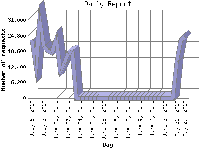

The Daily Report identifies the activity for each day within the reporting period. Remember that one page hit can result in several server requests as the images for each page are loaded.

| Day | Number of requests | Number of page requests | |
|---|---|---|---|
| 1. | May 29, 2010 | 24,272 | 143 |
| 2. | May 30, 2010 | 23,011 | 163 |
| 3. | May 31, 2010 | 14,676 | 170 |
| 4. | June 1, 2010 | 1 | 0 |
| 5. | June 2, 2010 | 0 | 0 |
| 6. | June 3, 2010 | 0 | 0 |
| 7. | June 4, 2010 | 0 | 0 |
| 8. | June 5, 2010 | 0 | 0 |
| 9. | June 6, 2010 | 0 | 0 |
| 10. | June 7, 2010 | 0 | 0 |
| 11. | June 8, 2010 | 0 | 0 |
| 12. | June 9, 2010 | 0 | 0 |
| 13. | June 10, 2010 | 0 | 0 |
| 14. | June 11, 2010 | 0 | 0 |
| 15. | June 12, 2010 | 0 | 0 |
| 16. | June 13, 2010 | 0 | 0 |
| 17. | June 14, 2010 | 0 | 0 |
| 18. | June 15, 2010 | 0 | 0 |
| 19. | June 16, 2010 | 0 | 0 |
| 20. | June 17, 2010 | 0 | 0 |
| 21. | June 18, 2010 | 0 | 0 |
| 22. | June 19, 2010 | 0 | 0 |
| 23. | June 20, 2010 | 0 | 0 |
| 24. | June 21, 2010 | 0 | 0 |
| 25. | June 22, 2010 | 0 | 0 |
| 26. | June 23, 2010 | 0 | 0 |
| 27. | June 24, 2010 | 0 | 0 |
| 28. | June 25, 2010 | 0 | 0 |
| 29. | June 26, 2010 | 18,300 | 150 |
| 30. | June 27, 2010 | 17,945 | 169 |
| 31. | June 28, 2010 | 13,999 | 139 |
| 32. | June 29, 2010 | 10,789 | 114 |
| 33. | June 30, 2010 | 23,246 | 110 |
| 34. | July 1, 2010 | 17,987 | 108 |
| 35. | July 2, 2010 | 18,888 | 120 |
| 36. | July 3, 2010 | 20,634 | 144 |
| 37. | July 4, 2010 | 30,476 | 146 |
| 38. | July 5, 2010 | 12,768 | 134 |
| 39. | July 6, 2010 | 23,118 | 128 |
Most active day May 31, 2010 : 170 pages sent. 30,476 requests handled.
Daily average: 129 pages sent. 18,007 requests handled.
This report was generated on July 7, 2010 05:38.
Report time frame May 29, 2010 00:00 to July 6, 2010 23:59.
| Web statistics report produced by: analog 6.0 / Report Magic 2.21 |